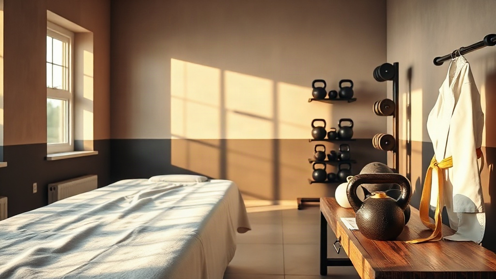

Ruch, dotyk i stopy — jedno miejsce, cały człowiek.
Centrum sportu i usług prozdrowotnych: treningi personalne i grupowe, masaże, podologia, fizjoterapia i szkoła karate z medalami Mistrzostw Polski.
Cztery rzemiosła pod jednym dachem
Jedyne miejsce w promieniu 30 km, które łączy trening personalny, masaż, podologię, fizjoterapię i szkołę karate. Jedna wizyta może obsłużyć całego człowieka — od stóp po plan treningowy.
Masaże
Klasyczne, lecznicze i relaksacyjne, bańka chińska, kobido, gorące kamienie — 8 form masażu.
Podologia
Zabiegi podologiczne, klamry, wrastające paznokcie, brodawki — profesjonalny gabinet.
Treningi
Personalne i grupowe, w tym „babska siła” — z trenerem medycznym w zespole.
Karate
Szkoła z medalami Mistrzostw Polski i własnym turniejem — 12 edycji cyklu.
Ruch + terapia manualna + stopy
Większość dolegliwości, z którymi przychodzą do nas klienci, ma kilka przyczyn naraz: przeciążenie, zaniedbane stopy, brak ruchu, stres. Dlatego pracujemy zespołowo — masażysta, fizjoterapeuta, podolog i trener widzą tego samego człowieka z czterech stron i ustawiają jeden plan.
Przyjdź po swoje
Nie musisz wiedzieć, od czego zacząć — wybierz sytuację, a podpowiemy drogę.
Boli plecy od pracy
Masaż + fizjoterapia + trening medyczny — „W Dobrych Rękach” i Hubert w jednym miejscu.
Czas na stopy
Od odcisków po paznokieć wrastający — gabinet podologiczy z pełnym zakresem zabiegów.
Dziecko ma się ruszać
Karate od 5. roku życia: dyscyplina, sprawność i turnieje w rodzinnej atmosferze.
Wrócić do formy
Trening personalny dla początkujących i „babska siła” dla kobiet w każdym wieku.
Centrum, dojo i gabinety
Sezon 2026 w medalach
Karate to w Pro-Health nie zajęcia dodatkowe — to szkoła mistrzów z własnym turniejem i kadrą medalową.

Cztery złota zespołu
Zawodnicy szkoły zdobyli 4 złote medale Mistrzostw Polski. „Nie odbierałam telefonów gabinetowych — moje pitbulle zdobywały Mistrzostwa Polski” — relacjonowała Maja po zawodach.

Podium i mistrzyni z własnej drużyny
Malta Cup 2026 przyniósł medale kadrze — w tym złoto Oliwii Staniak, zawodniczki, która dziś pracuje w zespole jako masażystka. Ścieżka „zawodnik → instruktor” działa.
Turniej Małego Karateki — impreza, którą prowadzimy od 12 lat
Cykliczny turniej dla najmłodszych karateków, organizowany w Uniejowie przez Maię Ostrowską-Gralkę. Jubileuszowa, dwunasta edycja odbyła się 30 maja 2026; dziesiąta zgromadziła 136 zawodników z 6 klubów. Stałymi partnerami są Gmina Uniejów i Termy Uniejów.
Turniej to dla dzieci pierwszy start w bezpiecznych warunkach, a dla rodziców — dowód, że klub myśli o rozwoju, nie tylko o składkach. Informacje o kolejnej edycji: 609 037 081 i profil klubu na Facebooku.
Co mówią o nas klienci
Realne opinie z Facebooka — kolejne zbieramy po naprawie profilu Google.
Najczęstsze pytania
Wszystko, co warto wiedzieć przed pierwszą wizytą — od masażu po karate.
Umów wizytę lub trening
Zadzwoń — doradzimy, czy zacząć od masażu, zabiegu podologicznego, fizjoterapii czy treningu. Razem ułożymy plan.
Zadzwoń: 609 037 081